One Human Demo, Rendered into Robot Data
Real2Render2Real ported to a UR5e + Robotiq 2F-85 on my own bench: three tasks, each from one human video
Northeastern University
Scan, Track, Render
I moved a cube between two fixtures on a real UR5e bench while two calibrated RealSense cameras recorded. The scene was scanned with a phone, the cube was tracked in 3D, and the motion was re-rendered as a UR5e + Robotiq demonstration that can be varied and scaled without teleoperation. The three panels show the same moment: 01 the human demo, 02 the cube’s tracked 6-DoF pose drawn on the real frame, and 03 the robot replay rendered from the same camera. Drag the slider or jump to a phase.
Three Tasks, One Pipeline
The same pipeline on three tasks, each from a single human demonstration recorded by the same two calibrated cameras: move a cube between two fixtures, hang a roll of tape on a mug tree, and put a nut on a bolt. The cube demo had depth; the tape and nut demos are colour video only. For those two, each object is a simple shape measured from both camera views, and its pose is tracked by fitting that shape’s outline in both views at once. Everything after tracking is shared: the calibrated cameras, the robot model, warping the demo to new start poses, the planner’s collision checks, the renderer and the randomization.
What each task needed
| Cube | Tape roll | Nut | |
|---|---|---|---|
| Recording | Colour + depth, front and right RealSense | Colour only, same two cameras | Colour only; the hand hides the nut from the right camera for about 1.3 s |
| Object model | Cut out of the phone-scan Gaussian splat | Measured ring of tape on a core: 51 mm radius, 24 mm wide. Mug tree measured from both views | Measured ring: 32 mm across, 21 mm hole, 16 mm thick. Bolt stand measured from both views |
| Tracking | Scanned mesh fitted to both depth images | Shape outline fitted in both views at once | The same, re-detected after fast moves; front view alone while hidden |
| Grasp | From above, at the cube’s 4 symmetric yaws | Pinch the tape band from the top face, 12 positions around the rim | From above, across the outside, 12 positions |
| Demo clean-up | Level the cube; smallest yaw under its 90° symmetry | Tilt the roll the shorter way, using its end-for-end symmetry; release once it is 4.5 cm onto the branch. The branch used faces away from the robot, so the twin’s tree is turned 250° | Level; end centred on the rod (tracked 1.4 mm off, 2.9 mm of hole clearance) and lowered from above its tip. The human’s start is out of reach, so starts move 14 cm closer |
| Generated | 448 / 448 pass | 25 / 48 pass | 48 / 48 pass |
The rest of this page follows the cube task in detail: the 3D replay, the method, scene edits with demo repair, trajectory interpolation, other embodiments and the policy experiment.
Interactive 3D Replay
The same generated demonstration as a 3D scene: the robot URDF, the cube as the Gaussian splat cut from my phone scan, the scanned bench, and both camera frustums showing their rendered views. Drag to orbit, scroll to zoom.
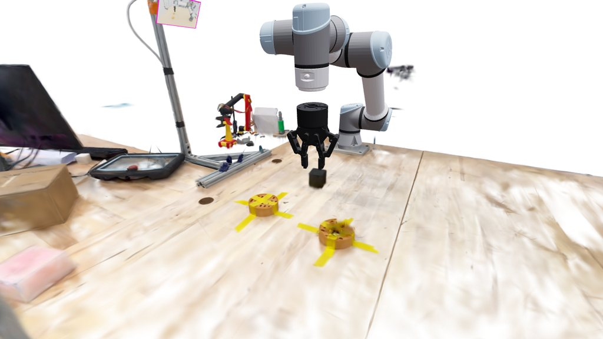
Method
Step 1Scan
A Gaussian splat of the bench from a phone video (450k Gaussians). I registered the RealSense frames into its COLMAP model to recover metric scale and the scan-to-robot transform; two independent estimates agree to 0.2%. The clip ends on a wipe between the splat, rendered from the right RealSense pose, and that camera’s real frame.
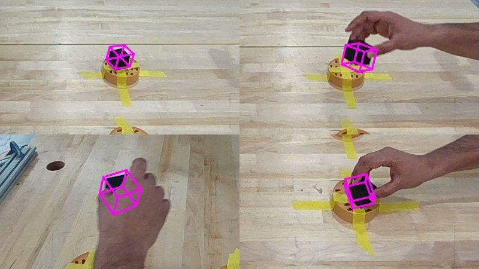
Step 2Track
The cube’s pose per frame from both depth cameras: the scanned cube model fitted with ICP, re-detected on fast lifts and kept consistent across the cube’s 24 symmetric orientations. Without depth, as for the tape and the nut, a measured shape is fitted to the object’s outline in both views at once.
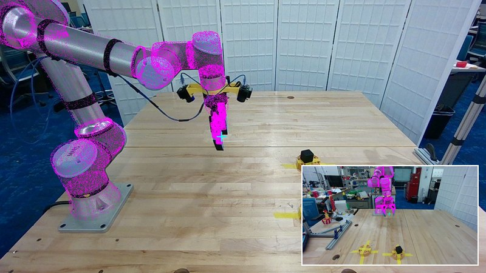
Step 3Embody
A UR5e + Robotiq 2F-85 model in the calibrated base frame, with the gripper mount fitted against the real images, so the simulated cameras and robot line up with the real ones.
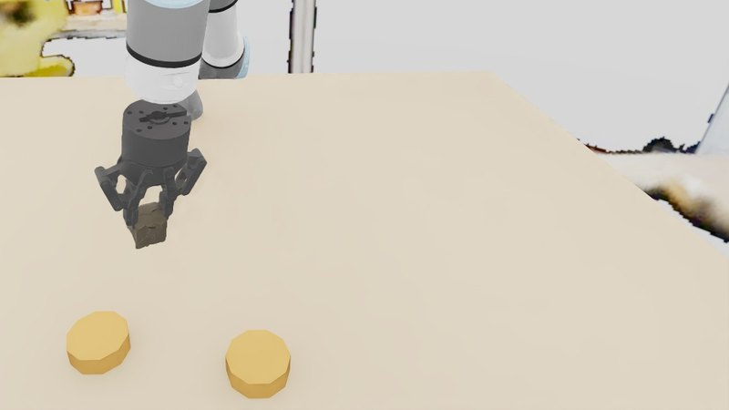
Step 4Render
IsaacLab replays the object motion kinematically. IK follows a grasp on the cube; a feasibility filter rejects rollouts with IK error, joint-limit violations or finger–fixture contact.
One Demo, Many Demos
Each rollout re-samples the cube’s start pose, warps the demonstrated path to it, and randomizes lighting, camera pose and table appearance. The background is a 360° render of the lab from the same phone scan.
Data distribution: every frame is the first frame of a different generated rollout (448 without the bottle, 225 with it), so the clips flick through the spread of cube start poses, lighting, camera poses, table looks and bottle placements.
Edit the Scene, Repair the Demo
Warping the demonstrated path only works in the scene it was recorded in. Put a new object on the route and the warped motion can run straight through it, so the filter throws the rollout away. I added a repair step: insert the object (here a scanned bottle), check the generated motion against it with a sphere model of the arm, gripper, wrist cameras and held cube, and re-optimize only the free segments, the transit and the middle of the carry. The grasp, lift-off, set-down and release stay exactly as generated; if the object blocks one of those, the rollout is still rejected.
Trajectory Interpolation
From one demonstration the generator samples a distribution of cube trajectories: each new start pose on the pick fixture gets the tracked path warped to it over its first 60%, ending at the demonstrated place pose. Permuting the objects in the scene multiplies that again: every interpolated trajectory is checked against the inserted object and repaired where it collides.
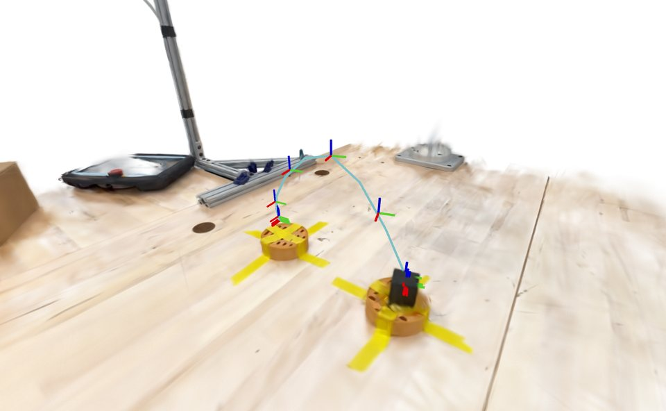
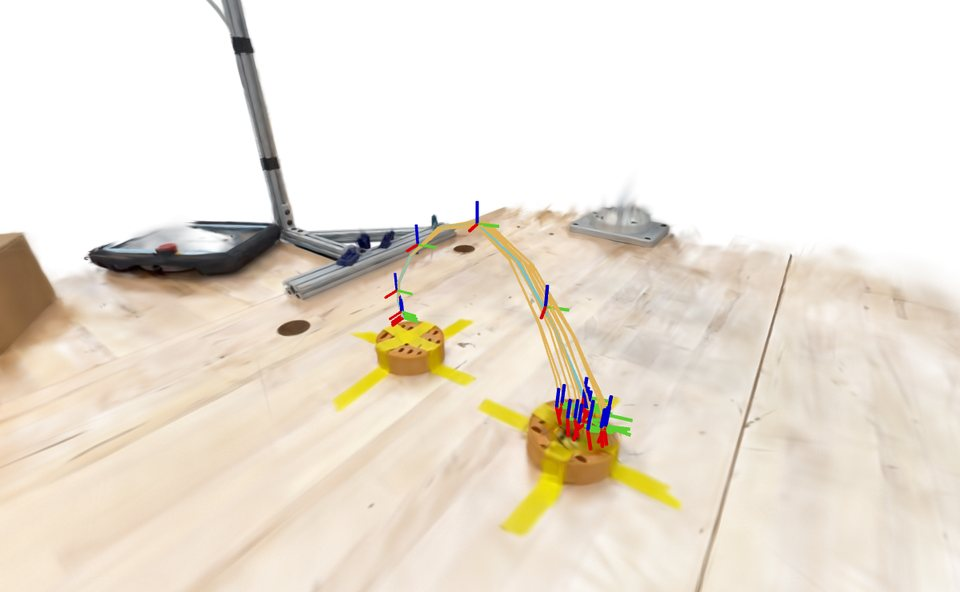
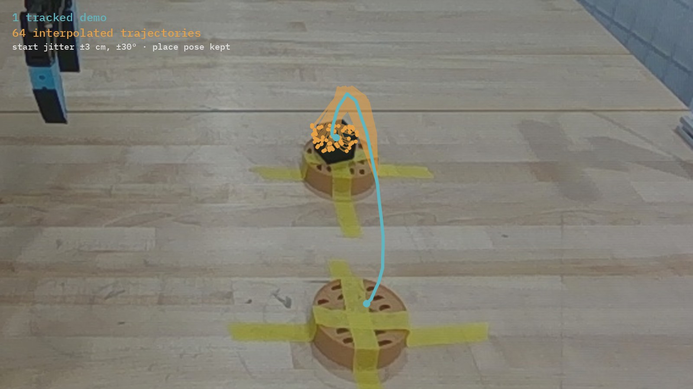
Permuting the collision objects
Three Google Scanned Objects, a bottle, a mug and a cereal box, placed on or beside the route. Red: interpolated trajectories whose plain motion collides with the object (the filter would drop them). Amber: the trajectories the generator keeps, repaired where needed.
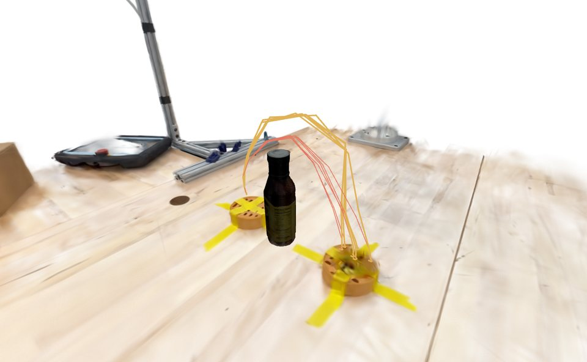
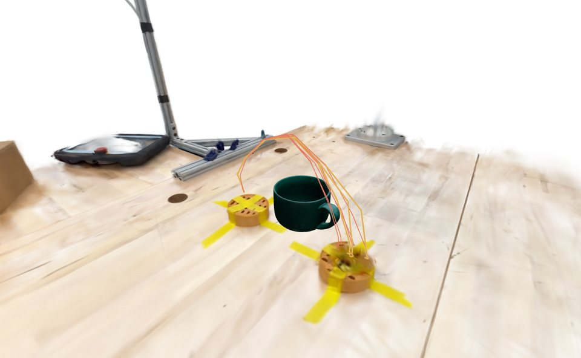
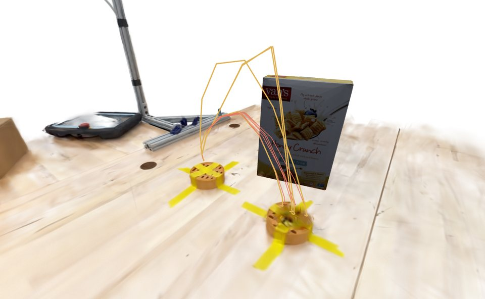
Interactive: the demo, the interpolated fan, then each object placement in turn with a cube riding one repaired trajectory.
Rendering More Embodiments
The generated robot motion comes from the cube’s motion and a grasp on it, not from a recorded robot motion, so the same tracked trajectory retargets to any arm that can reach it. The UR5e and a UR10e on the same bench mount, and a Franka Panda standing on the table, all execute it with the demo’s grasp; whole-trajectory IK tracks every gripper target to within 0.01 mm.
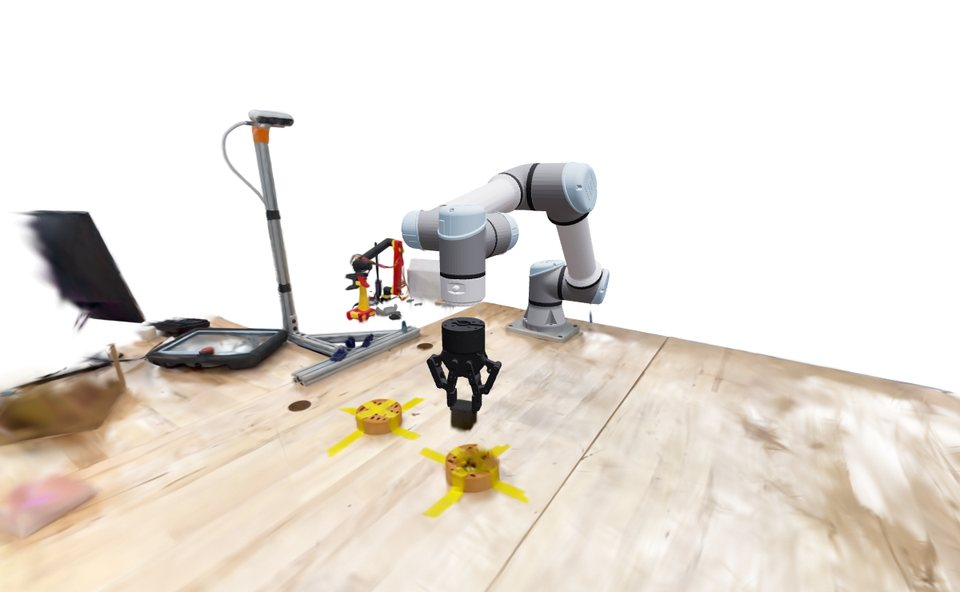
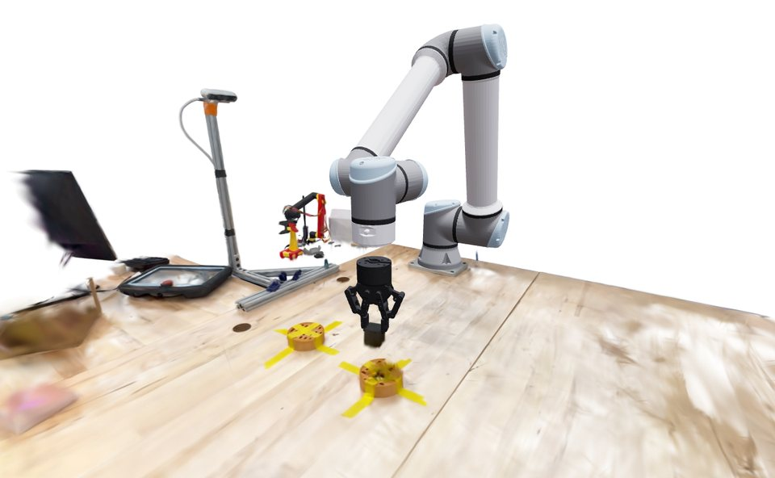
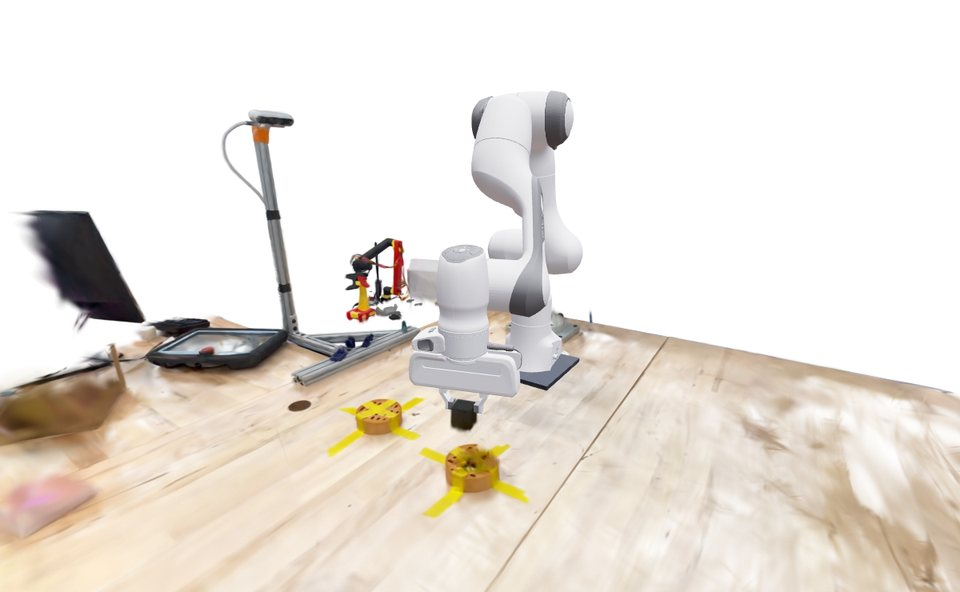
Does More Diverse Data Train a Better Policy?
The point of generating data is a better policy, so I tested that directly. I trained the same visuomotor policy (ResNet-18 on the front and right camera images plus joint state, predicting chunks of 16 joint targets) on generated datasets of increasing diversity, then ran each policy closed-loop in the twin on the same 192 held-out scenes: 96 clean ones with new cube start poses, lighting, camera poses and table looks, and 96 where a bottle stands on the route so that the plain warped motion would hit it.
| Training data | Clean scenes | Bottle on the route |
|---|---|---|
| One demo, replayed | 3% (3/96) | 0% (0/96) |
| R2R2R, 25 rollouts | 35% (34/96) | 1% (1/96) |
| R2R2R, 100 rollouts | 85% (82/96) | 0% (0/96) |
| R2R2R, 400 rollouts | 94% (90/96) | 1% (1/96) |
| R2R2R + filtered bottle scenes | 96% (92/96) | 4% (4/96) |
| R2R2R + repaired bottle scenes | 95% (91/96) | 85% (82/96) |
Filtering alone cannot teach avoidance: it keeps only the scenes where the warped motion already misses the bottle, so the policy never sees a detour. Repairing the blocked scenes puts those detours into the data.
Acknowledgements
This project builds on Real2Render2Real by Justin Yu, Letian Fu, Huang Huang, Karim El-Refai, Rares Andrei Ambrus, Richard Cheng, Muhammad Zubair Irshad and Ken Goldberg; the scanning, tracking, bench calibration, UR5e port and demo repair shown here are my own work on my own data.
@misc{yu2025real2render2real,
title = {Real2Render2Real: Scaling Robot Data Without Dynamics Simulation
or Robot Hardware},
author = {Justin Yu and Letian Fu and Huang Huang and Karim El-Refai and Rares Andrei Ambrus
and Richard Cheng and Muhammad Zubair Irshad and Ken Goldberg},
year = {2025},
eprint = {2505.09601},
archivePrefix = {arXiv}
}